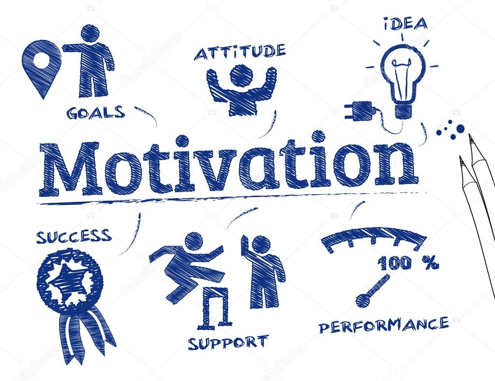

Recognizing Motivation
There are many reasons to be motivated. It could help ease a person's life. Motivation is a direction people can take to pursue a goal or outcome.
Types
There are many types of motivation. The two main types of motivation are intrinsic motivation and extrinsic motivation. Just think of it as internal and external motivation for now.
Intrinsic Motivation
Intrinsic motivation is when a person knows that they are doing the right thing and should continue doing it. For example, a person may be motivated to exercise due to the desire to feel and look better. Intrintic motivation is more sustainable than extrinsic motivation by the person focusing on positive things they can control.
Extrinsic Motivation
Extrinsic Motivation is based on external rewards like money or praise from someone else. For example, people who want rewards such as money and days off receive extrinsic motivation. Extrinsic motivation is more complex than intrinsic motivation because rewards could be either tangible or intangible and could also relate to fear.